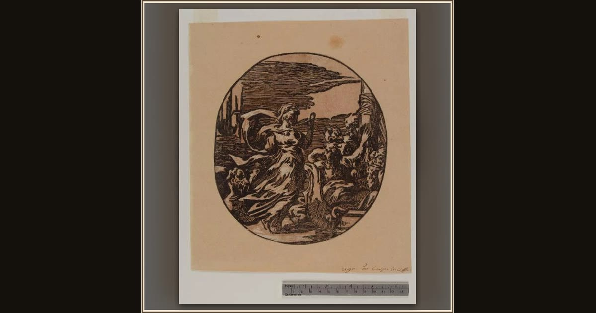

Circe Drinking in the Presence of Ulysses' Companions
Attributed to Antonio da Trento, after Parmigianino; lighter block possibly by Ugo da Carpi · c. 1520–1527 · Musei Civici di Pavia – Pinacoteca Malaspina · Pavia, Italy
Circe raises a cup amid human-animal companions in this compact chiaroscuro composition after Parmigianino. Explore its place in Book X of the Odyssey.